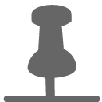
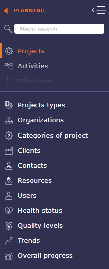
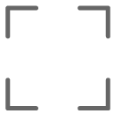
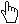

Graphical User Interface¶
ProjeQtOr interface is divided into several areas.
Overview graphical user interface screen¶
Note
The splitters allow resizing areas in the interface. Their position is saved and retrieved on each connection.¶
Top bar¶
Navigation buttons¶
The navigation buttons  give access to previous and next pages in the history.
give access to previous and next pages in the history.
The Ajax technology used by ProjeQtOr makes it possible to refresh the data while preserving the structure of the solution.
This is why you will lose the session to projeqtor if you use the navigation of your internet browser.
Project selector¶

Project selector¶
The selector allows you to select the project to work on by limiting the visibility of all screens to the items in the selected project, including sub-projects if any.
When you create a new item, this sets the project scope automatically.
Note
In the User parameters the default project Defines the project that will be selected and display by default into the project selector.
See also
Project selector parameters
Click on  to display the project selector parameters dialog box.
to display the project selector parameters dialog box.

Dialog box - Project selector parameters¶
3 tabs allow you to adjust certain aspects of the selector:
Selector format
Favorites
Other
Format selector¶
In the format selector, you choose how the elements are displayed in the list, an option to display only projects with the macro state in progress.
You choose the number of sub-projects displayed in the project selector. The number by default is 2 levels.
Projects Selector with level display¶
In addition to a search field in the selector directly, you can display the list of projects in different ways.
A search field integrated into the list can allow you to quickly search through all your projects.
Search in project’s selector¶
Standard reflecting WBS structure
List of project and sub-project are displayed according to WBS structure.
This is the only presentation mode where you can create favorites lists.
You can choose to display multiple projects by checking the corresponding boxes.

Project list display mode standard¶
Filtering select with autocomplete
List of project and sub-project are displayed according to entered text.
Search criteria works in a “starts with” mode
Autocompletion is active
Compatible with favorites, but you can no longer create a list.

Filtering select with autocomplete¶
Filtering select with search
List of project and sub-project are displayed according to search criteria.
Search criteria works in a “contains” mode
Autocompletion is not active
Compatible with favorites, but you can no longer create a list.

Filtering select with search¶
Note
With the new search box integrated directly into the picker list, these three options will soon be obsolete.
Selector of the current item
Click on the button
 to select current project in the project selector.
to select current project in the project selector.Click once, from any element to display in the selector the project linked to the element.
Double click to display all projects again
Project selector search
Click on  to search projects and sub-projects from any screen with the same search functions as on the projects screen
to search projects and sub-projects from any screen with the same search functions as on the projects screen

Project selector search window¶
Refresh the list
Click the refresh the list button to immediately update the list of displayed projects.
Creating a new project may not be displayed immediately in your collaborators’ interface, the display time depends on your connection.
Some application settings can be refreshed using this button without having to disconnect/reconnect your account.
Favorites project¶
You can create several favorites project list in the project’s selector.
project selector favorites¶
Click on the  displayed to the right of the project name to select it and add it to your favorites list.
displayed to the right of the project name to select it and add it to your favorites list.
You can only create a favorites list from the layout representing the WBS structure in the previous tab but the lists are compatible with all presentation modes
See also
Click on
to to be able to save your list.Name the liste of favoris
Click on
 to save your list
to save your list
Favorites list in project selector¶
When a project favorites list is selected it is highlighted in the secondary color of your session.
When the list of projects is limited to favorites, we also display recursively, the visible parents of favorite projects and the visible subprojects of favorite projects whether they are favorites or not.
Example display for project selector favorites¶
When a favorites list is enabled, “all projects”, is replaced with All favorite projects.
You can limit your list of favorites or display them in their entirety by clicking on this option.
This will be the display default.
Update your favorites list¶
Select the projects to add to your list by checking the corresponding boxes.
Click on the
to access the favorites management tab.Enter the name of an existing list.
Click on the turn current selection into favorite button.
Other¶
Enter the Archive Mode option allows you to show te closed items.
When archive mode is active, then icon is displayed in the top bar. Click on it to stop the process.
Archive mode allows you to see closed projects in the project selector.
To display closed projects in the list area of the projects screen switch the button “closed”.
Only the administrator can see this button permanently.

When Archive mode is active, Projects lists on report parameters show closed projects.
Instance name¶
you can rename the name of the ProjeQtOr instance via the global parameters in the View tab.
See also
Infos bar¶
CRON button¶
The CRON activation button allows you to quickly see if your CRON is launched or not.
The button is only visible for Administrator profile.
the CRON is running
 In request for closure. The next refresh turns it red.
In request for closure. The next refresh turns it red.
the CRON is stopped
Click on the button to start or stop CRON in the same way as on the Administration page.
See also
About menu¶
This menu allows you to have access to real-time information with a notification system for news.
About menu¶
The button  sends you to the forum of the ProjeQtOr site in order to post the possible anomaly.
sends you to the forum of the ProjeQtOr site in order to post the possible anomaly.
Links
The links indicated allow you to display:
the software manual,
the manual page concerning the keyboard shortcuts taken into account in ProjeQtOr,
the version information on the external libraries used in ProjeQtOr.
News
Find all the information about ProjeQtOr in real time.
Hover over the desired information with the mouse to preview it.
Click to view full information.
A navigation system allows you to consult all the information.
Access
Access ProjeQtOr’s plugin store and forum summary with just one click.
Screen layout¶
The layout of the screens allows you to choose how you want to display the ProjeQtOr interface
The arrangement not chosen appears in gray

Screen layout¶
Many modes are available!
 switched mode
switched mode
Allows to enable or disable switched mode that allows to switch between list and detail windows. Window selected is displayed in “full screen” mode.
Hidden window are replaced by a gray bar. Click on the gray bar to switch between windows.
Horizontal layout - vertical layout
You have all the screens of the application in horizontal or vertical mode.
You can uniquely arrange your screens by using the display icon in the list box
Horizontal mode shows the list box at the top of the screen and the details box at the bottom.
Vertical mode shows the list box on the left of the screen and the details box on the right.
 Mode List
Mode List
Column mode corresponds to the historical presentation of ProjeQtOr, where the different parts making up the details area are displayed in one, two or three columns
The sections present in the columns are dispatched under tabs with the tab mode.
 Show/Hide Activity Stream
Show/Hide Activity Stream
Show or hide globally (on all screens), the notes area for each element.
To display notes only on a specific screen, choose from the details area toolbar.
See also
With this mode, you make your browser invisible, the menus, navigation bar, buttons … are hidden. You can enjoy your ProjeQtOr instance in full screen mode.
Session menu¶

Session menu¶
The connection window offers some settings and information at user level.
Profile
The profile section tells you:
Your name in the software
The connection identifier
The profile assigned in the software with this account
The organization to which the user belongs
The team to which the user belongs
Tip
You can assign a profile picture in the user parameters.
interface Parameters
This section allow you to choose and modify at your leisure:
the language of your personal session
the time zone is automatically entered according to the settings of your computer
the colors of your personal interface
the brightness level for the background of the screens
the home page which will be displayed when you log in
the speed of the main menu animation
the time in seconds for automatic list refreshing
the link to change your password
the link to user settings page
the disconnect button.
Important
All theses changes only impact your session and will apply over the global settings defined by your administrator.
Custom Menu¶
Bookmarks Bar¶
New element¶
This button allows you to quickly create a new element from any screen.

Create a new element¶
You can create:
a project
a resource
an activity
a ticket
a meeting
a milestone
The switch button “create on pop-up” allows you to define how to initiate the creation.
If the button is activated, a pop-up opens over the current screen on the screen of the element you want to create.

Create a new element¶
If the button is disabled, you go directly to the screen of the element you want to create.
Bookmarks¶
you can mark certain screens and organize them in the favorites bars to create a personalized menu.
You can create up to 5 favorite bars.
Click on to display in the display zone the list of screens of the elements that you have put in favorites.
Display bookmarks¶
Right clicking on the display area allows you to display and organize the 5 favorite bars and choose how to display them.
You have 3 ways to view your favorites:

Favoris¶
 Bookmarks icon: You display bookmarks in icon mode only
Bookmarks icon: You display bookmarks in icon mode only

Favoris¶
Favoris image¶
The number displayed corresponds to the number of the favorites bar on which you are.
To change bookmarks bar, use your mouse wheel when you are positioned on the bar.
Or click on the up and down navigation arrows at the right end of the bar.
Add, Organize and remove bookmarks
To add a bookmarks, click on the star to the right of each menu screen
The star is filled with the secondary color of your interface once added to the favorites bar

To organize your favorites, right click on the bar or click on  to display your 5 bars, then click and drag and drop the screens to the desired bars.
to display your 5 bars, then click and drag and drop the screens to the desired bars.
A green bar tells you that you can drop the favorites from your screen, a red bar tells you that it is impossible.
To remove a bookmark, right click on the bookmark and clik on the button remove from the custom menu bar

You can put the same bookmark on several bars. Ctrl click on the favorite and drag and drop to another bar.
The favorite will be duplicate.
Recents bar¶
The recent screens bar allows you to keep in memory the screens you have browsed since the connection. It acts like a kind of limited history.
Recent bar¶
Indeed, the number of recent screens depends on your screen resolution. for example: between 12 and 16 screens displayed for a 2K screen and between 6 and 10 for an HD screen.
Menu¶
Menu¶
Section indication¶
When browsing, each time you select a section or subsection, the icon corresponding to the latter is displayed in this area.
Show/Hide menu¶
Click on  to hide the menu
to hide the menu
Click on  to bring up the menu
to bring up the menu
Click on to anchor the menu, after you click on the icon then turns into a .
Search menu¶
You have the possibility to do a search directly in the menu.
The search takes into account the name of the element screens, but also certain tags, which do not know how to be enriched.

Search performed with the tag GANTT¶
The search also allows you to display the reports related to the keywords entered in a separate section.
When you click on a screen resulting from your search, the screen is displayed but you do not change the section in the menu, which allows you to return at any time to the screens of the section where you were.
To return to your section after a search, click the reset icon in the search field.
Secondary Menu¶
The secondary menu can be seen as the right hand side of the menu.
It allows you to display a lot of information about your project, your navigation or your organization.

Menu¶
Parameters¶
the parameters displayed in the secondary menu are linked to the selected screen.
In the example above, the user selected the Activity screen. We then see that the parameters are in direct correlation with the activities.
If the user selects the project screen, then the parameters will be adapted for those.
Links¶
Display hyperlinks to remote web pages.
These links are defined as hyperlink attachments on projects.
Links displayed here depend on the selected project.
Repertory and Document¶
Document directories give direct access to documents contained in the directory.
when you click on the icon with the zip, a pop up offers you to extract the application directory in archive mode in .zip format.
Files extraction¶
See also
Document directory screen.
Console¶
Displays information about main actions: insert, update, delete.
The timestamp indicates when the action was done.

Warning
Messages displayed here are not stored and will be flushed when user logout.
Notifications¶
In the secondary menu

Notifications¶
A little coffee¶
Find in this section some news concerning ProjeQtOr
Notifications¶
List Area¶
Element identifier¶
Displays the element name and the count of items in the list.
Each element is identified with a distinctive icon.
Click a column header to sort the list on that column (first ascending, then descending).
Sorting is not always on the name displayed.
If the sorted column is linked to a reference list with sort order value, the sorting is executed on this sort value.
Sorting on the “Status” allows to sort values such as defined in the workflow.
Click on a line (any column) will display the corresponding item in the detail area.
Tools¶
Click on
 to create a new element
to create a new elementClick on
 to refresh the list
to refresh the listClick on
 to automatically refresh the list
to automatically refresh the listClick on
 to organize the columns
to organize the columnsClick on
 to open the sub-menu
to open the sub-menuClick on
 to print the list area as it appear on the window
to print the list area as it appear on the windowClick on
 to export the list area to PDF
to export the list area to PDFClick on
 to export the list area to CSV
to export the list area to CSVClick on
 to open the multiple update
to open the multiple updateClick on to display this screen vertically or horizontally only

{kind=link}
{kind=link}
{kind=link}
{kind=link}
{kind=link}
{kind=link}
{kind=link}
{kind=link}
{kind=link}
{kind=link}
{kind=link}
{kind=link}
{kind=link}
Swith the button clos to make appear all the In progress element
Automatically refresh the list¶
Item list boxes can refresh automatically.
Choose in the connexion menu how often list boxes are automatically refreshed.
See also
The filters¶
The filters popup offers different levels of filters. Simple filters, permanent or not, advanced filters with the possibility of adding many criteria.
Filters windows¶
The rapid filters¶
You can choose to always display them in the toolbar of the list box by activating the switch button.
Filters always visible¶
You can choose to always display them in the toolbar of the list box by activating the switch button.
You can restrict the display for each of these criteria or combine them to make sorting more complex:
by ID
by name
by type
The Quick search
The quick search field is very powerful. It performs a search in almost all editable fields of the screen you are on.
Whether in descriptive fields, such as the result, description or SWOT matrix, notes or external references…
Click on the reset button to clear your search and restore the original display.
Important
Accents are not taken into account.
The quick filter ignores other filters and does not stack. It overrides all other display filters.
Status filters
Switch the button to display direct status filters. The display of new statuses is not direct and requires refreshing the page.
Status filter¶
Only existing status are visible if their are used.
Choice one of them and the item list will be filter.
This is a quick filter list by status.
Tags filters
Switch the button to display direct tags filters. The display of new statuses is not direct and requires refreshing the page.
Tags filter¶
Only existing status are visible if their are used.
You have the option to restrict the list of tags by project.
Choice one of them and the item list will be filter.
This is a quick filter list by status.
Sum on
With this feature you display at the top of the list box the sum of the category you have chosen in the drop-down list.
Sum on¶
Important
This feature does not take into account parent activities even if they themselves contain load.
Sum on display¶
The advanced filters¶
Click on the button to display the advanced filters window.
Advanced filters definition¶
Active filter
Define the clauses of filter or sort in “Add a filter or sort clause”.
Select the name of the field, the operator and the value to the clause.
Click on
 to add additional criteria.
to add additional criteria.Name the filter to save and click on
for later use.Choose a particular layout in the recorded layout’s list to apply the filter. The chosen layout will be displayed with the filter applied directly.
Click on
to filter the filter list.Click on OK button to apply the filter.
Click on Cancel button to revert to previous filter.
Click on Clear button to reset the active filter.
Logical operator
Possibility to select the logical operator OR between the criteria of a filter instead of AND.
Applies logical operator with preceeding criteria (by default AND).
Be careful, operator AND is applies before OR.
Dynamic value
When the selected value is dynamic, then you do not select anything in the list.
The value will then be entered when the filter is called and will be fully activated when the filter is chosen.
Saved filters
This section allows to manage saved filters.
Click on a saved filter to retrieve its definition.
Click on
 from a saved filter to delete it.
from a saved filter to delete it.Click on
 to reorganize the filters.
to reorganize the filters.Click on
 to shared a filter with your employees
to shared a filter with your employees
When your collaborators share filters, they appear below the list of saved filters.
Click on the list to display all filters and their author.

Shared filters¶
List of filters
The filters list allows to select a stored filter.
To see the filter list, move the cursor over the advanced filter icon.
List of filters¶
Click on the filter name to apply.
Click on no filter clause to reset the filter.
The columns¶
You can define which columns you want to display in the list area for the selected item.

Columns Organizer¶
The identifier and the name of the selected element are mandatory fields. They cannot be removed from view.
The display of columns can be defined by and for the user or it can be applied by default for a particular user.
Use the switches to select or deselect the columns to display.
Click on OK button to apply changes.
Click on Reset button to reset the list to its default format.
Click on “ To Manage” button to save column layouts.
The applied definition will be automatically retrieved at the next connection.
Column order
You can move columns using the handles in front of the column name. Click drag to where you want to drop it.

Drag and drop to move columns¶
You can move columns directly from the list area.
Dragged and dropped on list area columns¶
Click on the column to move and drag and drop where you want it. The icon shows you with an arrow where the column will be placed
Column size
Use the arrows to the right of the column name to increase or decrease the column width.
The width is in % of the total width of the list. The width of the field is automatically adjusted so that the total width of the list is 100%.
The minimum width is 10% and the maximum width is 50%.
You can also position your mouse between two columns and drag to change the width of the selected column.
Important
Total width greater than 100%
The total width should be limited to 100% maximum.
The overrun will be highlighted next to the buttons.
This may cause strange display, across page width, list, reports and PDF export, depending on the browser.
Columns layout
You can save different column layouts according to your needs for the same element.
Start by selecting the columns you want to put in one of the saved layouts.
Then, click on the “To manage” button to open the pop-up to save the current layout.
Layout Management window¶
Name the layout and click on
to save your layout to the list of advanced stored layouts.Click on
to delete a layout.Click on
to share the saved layout.Click on the name of the layout to select it and display the columns relating to it in the list area.
Shared layout
Shared layouts will be visible in the layout management pop-up.

Shared layout drop-down list¶
Each layout is presented under the name of the user who created and shared it.
Assign layout
You can assign a layout to one or more users depending on your rights.
Select the layout you want to assign by clicking on the handle in front of the name.
Click on the “attribute” button to assign a layout to a user.

Assignment popup for a layout¶
Drag and drop from left to right the users who will be assigned the layout.
It is possible to register selected users in a group.
Name the group in this dedicated field “save a group”.
Click on to save the group.
Click on to delete the group.
Once saved, you can retrieve the groups from the “remind group” dropdown.
Switch the options you are interested in to reapply this layout to each new connection or to assign the selected layout to each new user.
See also
The acces right
Exportation¶
Export to PDF format¶
Allows to export data of list to PDF format.
Export contains all details and links between tasks.
Export can be done horizontally (landscape) or vertically (portrait) in A4 and / or A3 format with high quality of details
Pop Up Print PDF¶
Click  to expand the pop up to full screen
{kind=link}
Export to CSV format¶
This functionality allows to export data of list in a CSV file.
The fields are regrouped and presented in the order as they appear in the item description.
Click on OK button to export data.
Click on Cancel button to close the dialog box.
The export definition is defined for each user.
The same definition can be applied in the next export.

Dialog box - Export¶
Use the checkbox to select or unselect all fields.
Click on Select list columns button to restrict selected fields to the ones that are currently displayed in the list.
For fields that reference another item, you can select to export either the id or the clear name for the referenced item.
Box checked indicating that HTML tags in a long text field will be kept during export.
Note
Import Datas
The active filter defined will be applied to export data.
The CSV exported files can directly be imported through the import functionality.
See also
Multiple update¶

Multiple mode item selection¶
Allows to update several items in one operation.
Click the items in the list box to select them.
Shift click to select consecutive items
Click ctrl to select non-consecutive elements
The fields that can be updated depends on the selected element.
The editable fields are sorted in alphabetical order.
 Number of selected item
Number of selected item
Indicates the number of objects selected in the list area.
 Fields choices
Fields choices
Choose in the list the field which must be modified on the selected objects.
When the control is chosen, a list of choices corresponding to the field is displayed.
Then choose the new value of the field.
Click on to apply the new value.
Tip
Tags don’t work exactly the same way, you can only add new tags. The list of tags already created is not visible
Target milestones can be modified with “multiple update” tickets and activity screens
You can bulk close items that do not have status (assigned, closed, recorded …) as resources
The passwords of all users can be reset at the same time:
On the users screen, In the update area, click on the Reset button.
An email will be send to the selected users.
 Items list
Items list
View in this list the operations carried out.
In green the operation is successful and the modification is applied.
In red, an error has occurred, the modification is not applied.
 Buttons
Buttons
Click on
 to unselect the selected element in the list area
to unselect the selected element in the list areaClick on
to apply the modificationsClick on
to access the deletionClick on
 to quit the multiple update mode
to quit the multiple update mode
{kind=link}
Item list¶
The list displays all items in the same categories and are clickable.
Most of the detail fields of the selected item can be displayed as a column in the list box.
The order and size of the columns can be customized.
Click on an element to display its detail.
Details Area¶

Details Area¶
Item identifier¶
Identifies the item with the element type and the item id and name.
Each element is identified with a distinctive icon.
Creation information¶
You can see at a glance the status, update and creation information of the element.
First calendar shows the date of update.
Second calendar indicates the creation date of the element.
Calendars appear in red when the modified or created date is today’s.
They appear in yellow when this date is yesterday.
and in gray when the date is older
The thumbnail corresponds to the creator of the element
Administrator can change the issuer and the informations date.
Edit creation informations¶
See also
Buttons¶
Some buttons are not clickable when changes are ongoing.
When changes are ongoing, you cannot select another item or another menu item.
Save or cancel ongoing changes first.
Hide details
This icon is visible on the views of the gantt chart in order to hide the details when it is set to vertical display.
Create a new item
Depending on the screen of the selected item, create a new item in that category.
Save the changes
Save the changes of the current item.
Or use shortcut key ctrl + S to save the changes on the current item.
Refresh the display
Allows you to refresh the details windows of the selected element
{kind=link}
The copy tool allows you to copy an element with multiple options.
You can select only certain information, such as the structure of the project, the meetings, the links or even the attached files and certain elements of the scope…
The information to be copied is different depending on the item selected.
The copy element with a field with the “unique” attribute automatically adds the extension (1) to respect uniqueness. The number increments with each copy of the same element.
Copy project¶
The options displayed in dialog box depends on whether the element is simple or complex.
Note
Recorded status
The new item has the copied status by default.
You can copy the project with the “recorded” status directly.
In the global settings, planning tab > automation section you can set this option definitively for each copy. If yes, the box will be automatically checked with each copy.
Important
When copying the project, the data of the closed resources are not copied.
The copy options will then be offered to you when you make a new copy of the same type.
If link copy to source is checked, the options for synchronize items are displayed.
Simple element
Simple element (environment parameters, lists,…) can only be copied “as is”.
Complex element
Complex element (projects, tickets, activities, financial documents …), it is possible to copy them into a new kind of elements.
For instance, it is possible to copy a Ticket (the request) into an Activity (the task to manage the request) or meeting, periodics meetings as well as test sessions.
For Projects and Activities, it is also possible to copy the hierarchic structure of activities (sub-projects, sub-activities and plannable elements).
Copy an activity¶
Activities also allow copying dependencies.
If you want to retrieve only successors or predecessors, click the corresponding checkboxes.
In case you want to retrieve all dependencies, select the last box. In this case, successors and predecessors will become read-only.
Delete the item
To delete the selected element.
Basically, some items cannot be deleted. For example, if actual work has been saved on an activity. The latter, as well as the project on which it depends, cannot be deleted.
To be able to delete these elements, go to the Acces rights menu in the specific access and choose YES in can force the deletion of the actual work in the “specific update rights” section.
Search in the planning (Gantt view)
{kind=link}
When you are on a planning item (ticket, activity, milestone, etc.) you can target it on the planning view.
Click the button to automatically access the planning view by targeting the previously selected item and centering it on the view.
If the item is closed on the Gantt view then the view will automatically open the parent activity or sub-project.
The project of the targeted item will be automatically selected in the project selector.
 Undo the change
Undo the change
The button is clickable only when changes are ongoing.
Allows you to undo changes made to the current element
Print the details
To obtain a printable version of the details of the current element.
Export to PDF format
To get a printable version of the details in PDF format.
 Export to PDF format and attach files
Export to PDF format and attach files
Allows to export the data of the selected element in PDF format and once generated, attaches the file in the section of the attached files of the element.
The export contains all the details and the links between the tasks.
Export can be done horizontally (landscape) or vertically (portrait) in A4 and/or A3 format with high quality details
 Email detail
Email detail
Allows to send an informative email to defined recipients list.
Email details dialog box¶
The list is defined according to the role of the recipient.
See also
Flag on the role checkbox to define the recipients list.
Checkbox other
Flag on the checkbox other to manually enter email addresses.
When sending an email, the address (es) entered in “other” remains in memory and will be proposed during the next mailing
Use commas or semicolons to separate addresses.
Message
The message that will be included in the body of the email, in addition to a complete description of the item.
Save as note
Flag on to indicate the email message will be saved as a note.
Email Template
You can choose an email template even without having predefined it in the settings.
To create and view templates.
See also
Files to attach to email
Attachments for the item appear in the attachment table. If the item has no files attached then the table is not visible.
The maximum size of attached files must be entered in the global parameters in the Mailing tab. The size indicated is in bytes unless you indicate otherwise. see: Global parameters
When you check a file to send the size of the latter is displayed at the top right of the table.
If several files are selected, then the total size of these files is calculated and displayed.
If the total size
 Subscribe detail
Subscribe detail
Allows to subscribe to tracking of an item.
This icon is checked when you subscribed  .
.
Subscribe detail¶
When a user “subscribes” to the project, he will receive notifications “to subscribers” for all elements of the project
You can subscribe a third party user to the tracking of an element (according the acces rights).
Click on Define others as followers
Drag the name of selected ressources and drop them on the right column for subscribe them.
Suscribe for other¶
You can view the list of followed items in two ways:
click on the button “View the list of subscriptions” in the subscription menu
In the user settings of the Automation section, click on the “show list of followed items” button.
You can see the items followed by your contacts

Display list of followed items¶
See also
Activity Stream
This icon allows you to display the Stream activity in a unique way on the selected element.
Unlike the Activity Stream icon in the Display layout menu which activates it globally on all screens.
The last position of the activity stream is always saved.
See also
 History of changes
History of changes
All the changes items are tracked.
They are stored and displayed on each item.
On creation, just an insert operation is stored, not all the initial values on creation.
Displaying the history of changes
The user parameter “Display history” allows to define whether the history of changes appears in a section or in a dialog box.
If the value “On request” is set, the button
appears on the detail header window.Click on to display the history of changes.
If the value “Yes” is set, the “Change history” section appears in the detail window.
Dialog box - History of changes¶
Show/Hide work
This button allows to show or hide work changes done in “Real Work Allocation”.
For section “Change history” the display of work is defined in user parameter “Display history”.
 Show / hide the checklist
Show / hide the checklist
This button is only displayed if the “display checklist” parameter in the user settings is set to “on request” status
See also
{kind=link}
This area allows to add an attachment file to the item.
Drop the file in the area.
Or click on the area to select a file.
Text editors¶
Text editors are available for editing of long text fields like description, results, notes, …
Selection of text editor can be done in User and Global parameters screens.
CK Editor
The most advanced web editor.
Spell checker available with this text editor.
CK Editor - Ability to resize the CK Editor height, the size is saved
Possibility to deactivate the SCAYT spell checker. It can be modified by each user in user parameters.
CK editor inline
As CK Editor.
Activated only when needed.
Note
CK editor inline height, keep the size of CK editor.
Click on the text zone to display toolbar.
Can not use it in fullscreen mode.
Plain text editor
Conventional text input.
Text zone is extendable.
Sections¶
The fields are regrouped under a section.
All sections can be folded or unfolded, clicking on the section title.
Columns
The sections are organized in columns.
Number of displayed columns can be defined in user parameters.
Common sections
Some sections are displayed on almost all screens. (See : Common sections)
Item count in the list
When the section contains a list, the item count is displayed at right of the header.

Header section¶
Thumbnails on items in the list
Thumbnails are displayed on item row to present field values in graphical format.
See also
Go to selected item
In a list, possibility to go directly to an item by clicking on its fields.
Cursor change to  on clickable fields.
Special fields¶
Special Buttons¶
Move to the next status¶
This button allows to skip to the next status without having to open the list. The next status is defined by the workflow linked to the type of element.

Move to next status¶
The mouse tracking over this colored button allows to show the workflow.
It is possible to define events when a state passes.
If a field is required for the transition from one state to another then you will be automatically redirected to the required field.
Regardless of the layout and presentation of your screens
Assign to me button¶
This button allows to set the current user in the related field.

Combo list field¶
Combo list field allows to search, view or create item associated with the field.
The access to view or create item depends on your access rights. Some buttons can be not available.

Combo list¶
Click on
 will directly go to the selected item.
will directly go to the selected item.Click on
to directly add a new element corresponding to the selected field.Click on
to search for an element among those existing corresponding to the selected field.
{kind=link}
Dialog box - Item search¶
{kind=link}
Some elements is possible to select several items, use Ctrl or Shift.
Origin field¶
The origin of an element has no impact on it.
This is a memo, pure information.
It can be filled in automatically during a copy or manually.

Origin field¶
This field allows to determine the element of origin.
The origin is used to keep track of events (ex.: order from quote, action from meeting).
The origin may be selected manually or automatically inserted during copying an element.
Click on
to add a orgin element.Click on
to delete the link.
Add an origin element¶
Choose the type of element from the drop-down list.
Select the item from the corresponding list
Set color field¶
This field allows to set the color of an item.
Used to differentiate items in list or report.
Click on list of colors to select.
Click on “Reset” button to erase.

Set color field¶
Displays a colored circle for field colorable.
Some list of values has a field to define a color.
A color is defined for each value.
Thumbnails¶
Thumbnails are a graphical representation of the field value.
Displays the date of creation or update of the item.
Move cursor over thumbnail to display the date.
Dates¶
 The Item have been created or updated today.
The Item have been created or updated today.
The Item have been created or updated recently.
{kind=link}
 Default view.
Default view.
User¶
Portrait of the user. Displays if it has created or updated an item.
If no photo is saved, an icon will automatically be generated.
The letter is chosen according to the real name. This is his initial.
Move the cursor over the thumbnail to display the user’s name and photo in its original size.
The user who does not have a photo automatically obtains a thumbnail with the first letter that makes up the real name.

list of users without personal photo¶
Privacy¶
Indicates the visibility level defined in a note or attachment.
Private contents.
Visible to team.
Message pop-up¶
Users may receive messages pop-up, displayed on the bottom right corner of the screen.
Three kinds of message may be displayed:
Information
Warning
Alert
Three possible actions:
Select to remind you in a given number of minutes (message will close and appear again in the given number of minutes).
Mark it as read to definitively hide it.
Mark as read all remaining alerts (the number appears on the button).
you can also use your browser notifications instead of those generated in the application.
Define the method of displaying notifications.¶
When you connect to the application, in the URL address bar, in front of the application address, click on the “notification” icon corresponding to your browser (different depending on the browser) your browser offers you to authorize the support of notifications or to always block them.
browser generated notifications.¶
Note
On Alerts screen, the user can read the alert messages marked as read.
Alert on detail window
On indicatorable items, you may see a small icon on top left of the detail of the item.
Just move the mouse over the icon to display, which indicator has been raised.

Alert on detail window¶
Alert on Today screen
Just move the mouse over the red line to display, which indicator has been raised.

Alert on Today screen¶
Comments¶
Move cursor over thumbnail to display text.